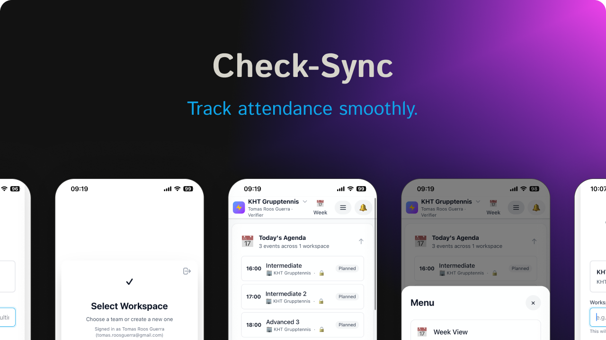
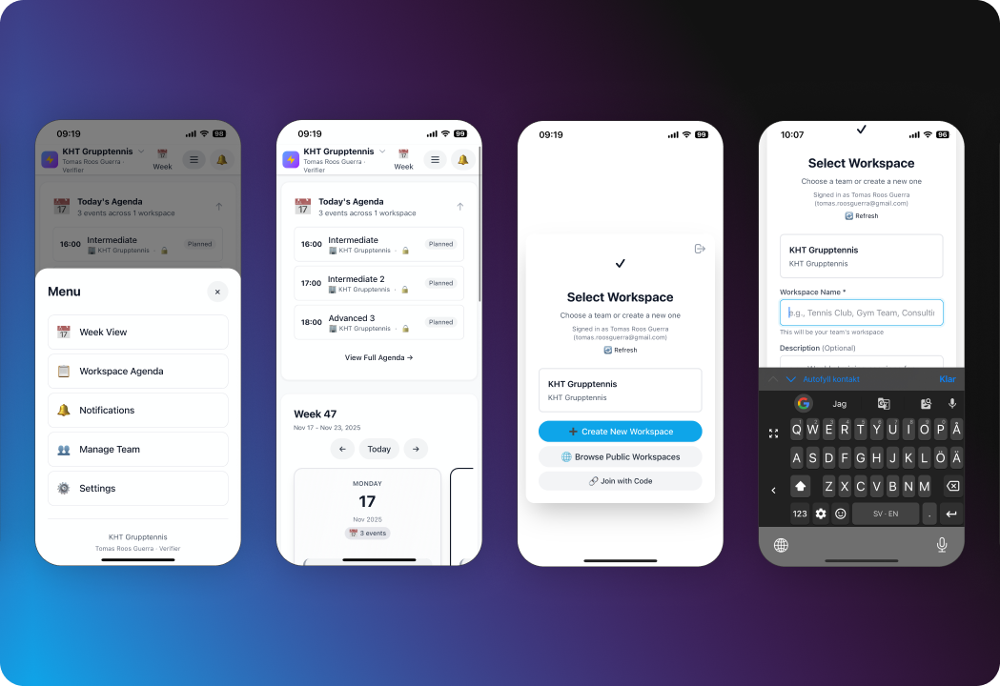

Check Sync
Task synchronization tool designed to help teams stay aligned across platforms. Reduces context switching and improves productivity through intelligent synchronization.

Overview
Teams used multiple task management tools, leading to information silos and constant context switching. Check Sync synchronizes tasks across platforms while providing a unified view that reduces cognitive load.
Problem
Information silos, missed updates, and constant context switching. High support tickets due to confusion about task status across platforms.
Solution
Unified dashboard that synchronizes tasks in real-time. Clear visual indicators show status, ownership, and updates. Intelligent filtering helps teams focus.
User Experience
Platform Integration
Simple onboarding guides users through connecting task management platforms. Clear instructions and security information. Customize sync settings for each platform.
Unified Dashboard
Central dashboard shows all tasks from connected platforms. Color-coded platform indicators, status badges, and clear hierarchy. Group by project, status, or assignee.
Real-Time Sync
Tasks sync automatically across platforms. Changes appear instantly with visual indicators showing sync status. Conflict resolution UI helps resolve issues quickly.
Filtering & Search
Powerful filtering by platform, status, assignee, project, or tags. Saved filter views for common queries. Global search across all platforms.

Key Features
Real-Time Synchronization
Automatic sync with clear visual indicators. Conflict resolution UI reduces support tickets by 22%.
Unified Dashboard
Single view of all tasks across platforms. Reduces context switching and improves team visibility.
Intelligent Filtering
Powerful filtering system with saved views. Helps teams focus on what matters most.
Activity Feed
Centralized feed shows all updates across platforms. Keeps teams informed without switching contexts.
Outcomes
Results
Significantly improved team productivity and reduced support burden. Teams reported better alignment and fewer missed updates.